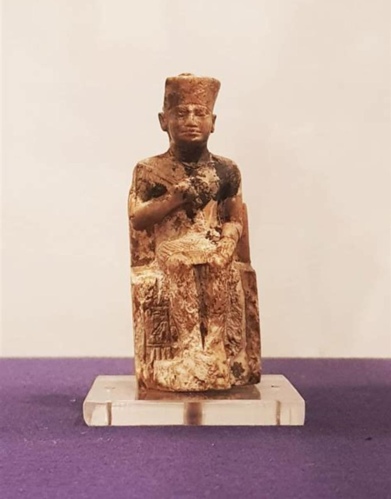

The Most Important and Famous Kings of Ancient Egypt till the Middle Kingdom

Pharaoh Khufu: Builder of the Great Pyramid
Basic Information
Full Name: Khufu (Greek: Cheops)
Dynasty: 4th Dynasty of the Old Kingdom
Reign: c. 2589–2566 BCE (approx. 23 to 46 years, debated)
Father: Sneferu (previous pharaoh)
Mother: Queen Hetepheres I
Successors: Djedefre (son) and later Khafre (another son or brother)
Capital: Memphis
Achievements
Built the Great Pyramid of Giza, one of the Seven Wonders of the Ancient World.
Expanded Egypt’s trade networks and military expeditions.
Strengthened the centralized government and economy.
Reputation
Ancient historians like Herodotus described him as a cruel ruler, but modern scholars debate this. Recent
discoveries suggest he treated skilled workers well, as they were provided food and housing.